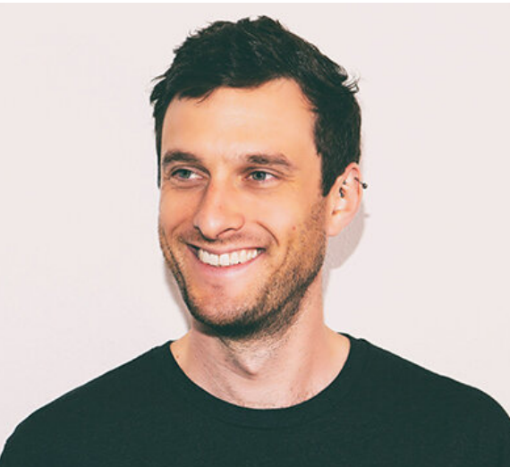
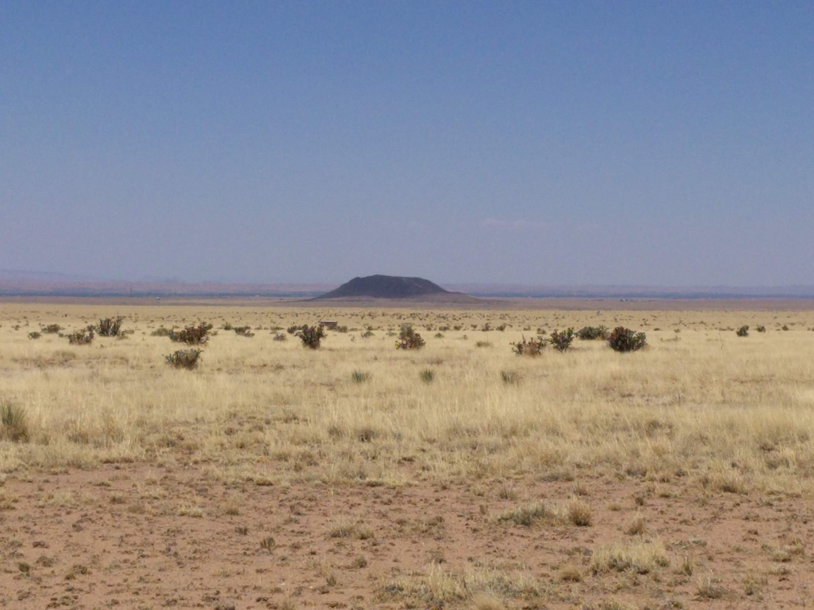
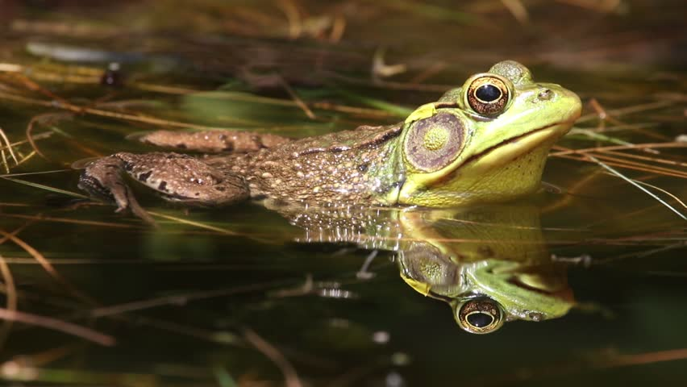

Blown To Bits, by Hal Albelson, et al. is the perfect combination of textbook and popular science for anybody interested in the social consequences of modern computing. Read More
Bio
A little about me.

I'm an Albuquerque-based data scientist with a background in research biology (BA, MA, PhD) and statistics (MS), a passion for problem solving, and the determination to make a positive impact in my community.
I am exceptionally curious, insistently collaborative, and unapologetically obsessive.
Scientist
To be a scientist is to create knowledge. The scientific mindset is fundamental to everything I do, and dominated my career for over a decade, during which I was a commited and highly interdisciplinary research biologist. My work ranged from community and evolutionary ecology to genomics and microbiology. I authored over twenty peer-reviwed research articles in top journals including Science, PNAS, and Current Biology.
Modeler
All models are wrong.
-- George Box.
To ensure models are useful, I draw from and combine a broad set of modern machine learning
and traditional statistical approaches. Central to my modeling philosophy is extensive domain research,
stakeholder and SME collaboration, and dogged data exploration.
Careful treatment and presentation of uncertainty is critical in most contexts,
and interpretable models are of paramount importance for stakeholder acceptance.
Engineer
To engineer is to build tools. Creating tools robust enough to withstand your future self and critical stanger alike is worth the effort. Since transitioning toward work outside the academy, I've enjoyed engineering data warehouses, designing dashboards for a diversity of stakeholders, developing statistics and visualization software, and contributing novel data products.
Curriculum Vitae
An abbreviated sketch.
Education
MSc. Statistics. University of New Mexico. May 2022.PhD Animal and Plant Sciences. University of Sheffield, UK. December 2014.
MA Biology. Wesleyan University. May 2010.
BA Biology. Wesleyan University. May 2008.
Work Experience
Senior Data Scientist. Resilient Solutions 21. January 2021 - present.Staff Data Scientist. Resilient Solutions 21. May 2019 - Dec 2020.
Research Analyst. Central New Mexico Community College. June 2018 - April 2019.
Postdoctoral Fellow. University of New Mexico. July 2017 - May 2018.
Postdoctoral Fellow. University of Connecticut. January 2015 - June 2017.
Portfolio
Check out my latest projects.
I've had the privilege of working on an incredible array of projects. Take a look below, or dive straight into the code on GitHub.
Optimizing Cropland Planning with Genetic Algorithms
Farmers face a lot of complex decisions in the course of their work. One such problem is to determine how much of which crops they should plant to make the most efficient use of their monetary and land resources.
In simple circumstances, monocropping with whatever gives the greatest resturn on investment would be best, or maybe there's a clear approach to mixing crops given a restricted budget. But farmers often face a complex set of constraints that take these planning tasks from obvious to hard. For example, perhaps the farms have a limited budget for planting, always want to bring at least two crops to market, and don't want to plant less than one acre of any one crop.
Now the problem is hard. NP hard to be exact, meaning that not only are the solutions not obvious, the best numerical optimization approaches can't find optimal solutions quickly. In these circumstances, combinatorial optimization approaches -- like genetic algorithms and simulated annealing -- can offer solutions in a reasonable timeframe.
In this work, I used genetic algorithms, which biomimic the process of evolution by natural selection (a favorite topic of mine!) to find cropland planting configurations that have the highest yield, yet conform to a number of real-world constraints.
I will detail the approach in a longer blog post, but the big trick here was to repurpose binary chromosomes to encode an arbitrary number of crops through one-hot encoding. It required creating custom functions to initialize the population, perform chromosomal crossover, as well as mutation to make it work, in addition to the custom fitness function that encodes the constraints.
Check out the code on GitHub. (Currently Embargoed. Check back later or drop me a line!)
- Research Biology

Github Link
Desert Plant Traits and Population Dynamics
The effect of climate change on ecosystems is undeniable and increasingly severe. Understanding which organisms will respond to changing climate in which ways is a major goal for stewards and managers, but the idiosyncracies of each species make predicting responses a challenge. Because environmental impacts to organisms are mediated by their traits, a focus on trait-based ecology can help refine a predictive framework for understanding change in biological communities.
In this work, I orchestrated the collection of thousands of plants samples from over 100 species in the Sevilleta Wildlife Refuge and measured over a dozen plant traits for each, including plant height, tissue density, elemental and isotope composition, and fine-root structure, to look for commonalities in the way plants with similar traits fluctuate in biomass year over year.
There's just one problem: All the plants I looked at -- indeed, all organisms on Earth -- have a shared evolutionary history. This means that any statistical analysis of traits across species needs to account for non-independence in traits.
Approaches to addressing shared evolutionary history are well worked out, but implementations are non-trivial. A first step is to acquire an evolutionary tree, complete with estimates of branch lenghts between nodes, which requires a major data wrangling effort.
Next is to compute phylogenetically independent contrasts (PICs), which comes with it's own complications. One of the largest aspects of this project was creation of reproducible tools for creating and evaluating PICs.
And lastly, the modeling effort to evluate the relationship between plant traits and population dynamics. This part is a work in progress, so keep checking back! But work done to date has focused on determining the "right" biomass-based response metrics, and constructing principal components for regression, given extreme multicollinearity among the traits I measured.
Check out the code on GitHub.
- Research Biology

The Lamp
Proin gravida nibh vel velit auctor aliquet. Aenean sollicitudin, lorem quis bibendum auctor, nisi elit consequat ipsum, nec sagittis sem nibh id elit.
- Branding

GitHub Link
Noisy Neighbors
A New England pond can be deafening in the Spring. A primary culprit is green frogs (Rana clamitans), who call incessantly to attract mates. But their not the only one's trying to strut their stuff. The American bullfrog (Rana catesbeiana) breeds concurrently and their calls are even louder and longer, drowning out the green frogs.
Given the importance of breeding calls, vocal interference could seriously impact reproductive success. To cope with their noisy neighbors, scientists hypothesize that green frogs time their calls for intra-call pauses of their nearest bullfrog neighbors.
In this work, I used non-parametric analysis to determine whether green frogs were avoiding bullfrog calls from audio recordings in the field. I bootstrapped call duration and start time for green frog and bullfrogs separately to determine the empirical probability distribution of call interference (overlap) under randomness. With this approach, it was clear that the observed (lack of) overlap between green frog and bullfrog calls was very unlikely to occur by chance.
Read our paper in the Journal of Herpetology.
- Research Biology

Shutterbug
Dolores velit qui quos nobis. Aliquam delectus voluptas quos possimus non voluptatem voluptas voluptas. Est doloribus eligendi porro doloribus voluptatum.
- E-Commerce

Fuji
Proin gravida nibh vel velit auctor aliquet. Aenean sollicitudin, lorem quis bibendum auctor, nisi elit consequat ipsum, nec sagittis sem nibh id elit.
- Product Design

Skaterboy
Quisquam vel libero consequuntur autem voluptas. Qui aut vero. Omnis fugit mollitia cupiditate voluptas. Aenean sollicitudin, lorem quis bibendum auctor.
- Branding
- Product Design
Blog
Some technical demos, musings, and news.
In this post, I briefly demonstrate how to spin up a Windows machine in the cloud using AWS. I'm currently working on a Mac, so this has proved useful when developing and debugging tools for clients and collaborators who use a PC. Read More
This is my inaugrual blog post. My intension moving forward is to catalog a diversity of topics here, from technical demonstrations, musings on data science, and other (possibly ranting) discussions. Read More
Find Me
Please drop me a line!